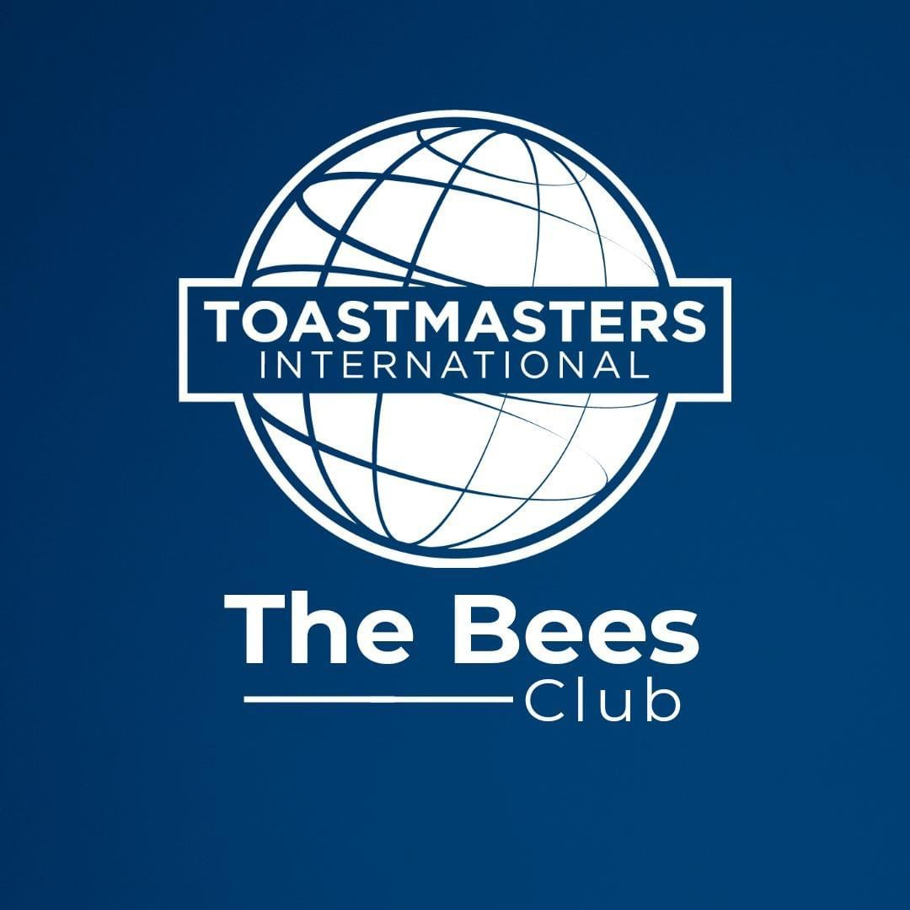

The site Plan.
Branding
Website Logo
Style Guide
Color Palette
Palette URL:
https://coolors.co/palette/03045e-023e8a-0077b6-0096c7-00b4d8-48cae4-90e0ef-ade8f4-caf0f8| Primary | Secondary | Accent 1 | Accent 2 |
|---|---|---|---|
| 03045e | 023e8a | 0077b6 | 0096c7 |
About the secondary pages starting with Home.
The Home page is the main page, its main purpose is to help you navigate smoothly from one page to another one. You will get two images there that are related to public speaking and communication.
About Education & Content
In our community, we provide an Education program that is called Pathways and Mentorship where a member can choose a path according to their needs. An then, each member will be mentored by an experienced Toastmaster for years in order to pursue the goals in a better way. Fr the content, You will be able to read a 600-word text which is describing the reasons of the website what you can take as advantages of that and why you should join our Toastmasters club, THE BEES.
Navigation
Site Map
Home
Schedule
Calendar